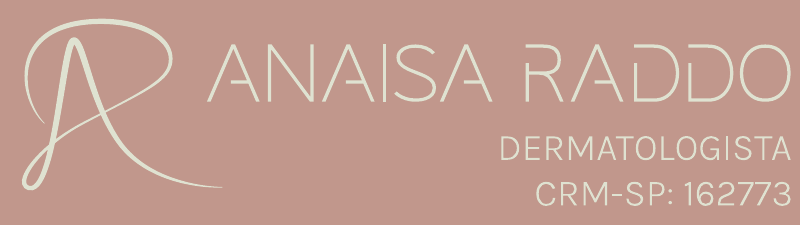

02 / TÍTULOS · INSTRUMENT SERIF
Beleza nos detalhes.
Clareza no cuidado.
Regular para títulos. Itálico para uma ênfase breve.
A marca original mantém seu desenho.

DERMATOLOGIAPELE, CABELOS E CUIDADO
Um olhar atento para sua pele,
seus cabelos e para você.
01 / DIREÇÃO VISUAL
Marca e cores preservadas. Uma linguagem tipográfica que dá espaço à delicadeza, à clareza e à presença.
Cores amostradas do cartão digital. Branco complementa as superfícies. Os nomes são referências para este estudo.
02 / TÍTULOS · INSTRUMENT SERIF
Regular para títulos. Itálico para uma ênfase breve.
A marca original mantém seu desenho.
03 / LEITURA · MANROPE
A pele e os cabelos fazem parte da nossa história. O cuidado começa com atenção às mudanças e espaço para conversar sobre o que você percebe.
Texto · 16–18 px
Entrelinha confortável · 150–165%
04 / ALÉM DO SITE
Títulos expressivos, textos simples e respiro. A mesma lógica pode orientar peças educativas e a comunicação do consultório.